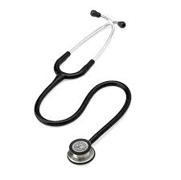

.jpeg "equipo de venoclisis")
Equipo de venoclisis
El equipo de venoclisis es un dispositivo médico utilizado para administrar líquidos,
medicamentos o nutrientes directamente en el torrente sanguíneo a través de una vena.
Este equipo consta de varios componentes, incluyendo una aguja o catéter,
un tubo flexible y un sistema de goteo que permite controlar la velocidad de administración del líquido.
Más información
.jpeg "Camilla")
Camilla
La camilla es un dispositivo médico utilizado para transportar a los pacientes de un lugar a otro, especialmente en entornos hospitalarios. Es fundamental para el cuidado y tratamiento de los pacientes, proporcionando comodidad y seguridad durante el transporte.
Más información.jpeg "silla de ruedas")
Silla de ruedas
La silla de ruedas es un dispositivo de movilidad diseñado para personas que tienen dificultades para caminar o desplazarse por sí mismas. Está compuesta por un asiento, respaldo, reposabrazos y ruedas que permiten al usuario moverse de manera independiente o con la ayuda de otra persona.
Más información.jpeg "Monitor de signos vitales")
Monitor de signos vitales
El monitor de signos vitales es un dispositivo médico utilizado para evaluar y registrar continuamente los parámetros fisiológicos de un paciente, como la frecuencia cardíaca, la presión arterial, la saturación de oxígeno en sangre y la temperatura corporal.
Más información.jpeg "Ecografo")
Ecografo
El ecografo es un dispositivo médico utilizado para realizar estudios de imagen del interior del cuerpo, empleando ondas sonoras de alta frecuencia para crear imágenes en tiempo real de órganos, tejidos y estructuras internas.
Más información.jpeg "Desfibrilador voltaje")
Desfibrilador voltaje
El desfibrilador voltaje es un dispositivo médico utilizado para restablecer un ritmo cardíaco normal en caso de paro cardíaco, mediante la aplicación de una descarga eléctrica controlada.
Más información.jpeg "Vendas")
Vendas
Las vendas son materiales utilizados en el cuidado de heridas y para proporcionar soporte y protección a áreas del cuerpo lesionadas o en recuperación.
Más información.jpeg "Jeringa")
Jeringa
La jeringa es un dispositivo médico utilizado para administrar medicamentos, fluidos o sangre directamente en el cuerpo, mediante la inserción de una aguja.
Más información.jpeg "Guantes")
Guantes
Los guantes son protectores utilizados en entornos médicos para prevenir el contacto con sustancias peligrosas o contaminadas.
Más información.jpeg "Cubre bocas")
Cubre bocas
Los cubre bocas son dispositivos de protección utilizados para prevenir la inhalación de partículas y microorganismos, comúnmente en entornos médicos o durante brotes epidémicos.
Más información
Tetostecospio
El termómetro es un dispositivo utilizado para medir la temperatura corporal, proporcionando información crucial para el diagnóstico y tratamiento de enfermedades.
Más información